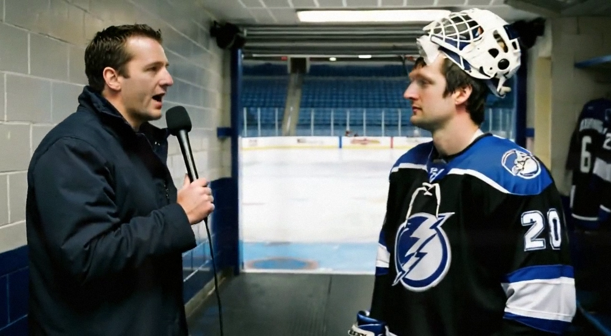

Khabibulin: 'The Puck Is Same Puck' After Tampa Bay's 7-1 Win Over Edmonton
The new Bolts netminder, in his first start since joining the club on December 1, waved off talk of an adjustment period and pushed back on the idea that this young roster needs coddling.
 Marcus BellRinkside reporter · The Tunnel
Marcus BellRinkside reporter · The Tunnel
1:19 · synthetic voices, produced from the record · download
 Nikolai Khabibulin86 joined
Nikolai Khabibulin86 joined  Tampa Bay Lightning on December 1 and turned his first start with the club into a 7-1 win over
Tampa Bay Lightning on December 1 and turned his first start with the club into a 7-1 win over  Edmonton Oilers at home on December 5. The 31-year-old stopped everything he saw except one shot, lifting Tampa Bay to 12-9-1 and a 1-game winning streak.
Edmonton Oilers at home on December 5. The 31-year-old stopped everything he saw except one shot, lifting Tampa Bay to 12-9-1 and a 1-game winning streak.
Transcript
Marcus Bell here in the tunnel after Tampa Bay's 7-1 win over Edmonton tonight. Nikolai, that is a loud scoreline. What did you like about it?
Good. Of course. The boys play hard, they push, they shoot. I just do my job. When you score seven, it is easy to feel good. But we must play hard all the way, that is important.
You came to this club on December 1st, so that was your first crack at a start in a Bolts sweater. Did you need any time to settle in?
No. I am goalie. The puck is same puck, the net is same net. I don't need... what you call... settle. I play. The guys are good, so I play. It is simple.
Well, there is some talk about this room being young. Seven players 24 or under, Vincent Lecavalier and Martin St. Louis carrying the offense. What's it like watching that group work from the crease?
Young, yes. But they are not children, you know? Lecavalier, he is big, he skates, he shoots. St. Louis, he is small but fast, he finds the space. They work hard. For me, this is good. Young guys, they are hungry. That is better than the old guys who... ...done.
One goal against tonight, so no shutout. That one's still a work in progress for you this season. Were you wanting it?
One goal. I take it. Seven is enough. The shutout, it comes. Today the boys put seven in. I cannot ask more. Maybe next time, zero.
Nikolai, enjoy the evening. Marcus Bell, back to you.